Temoin (tout a 0)


moy 63.6 · σ 34.9
cb123799 / 16de2ece
Rouge teinte -60
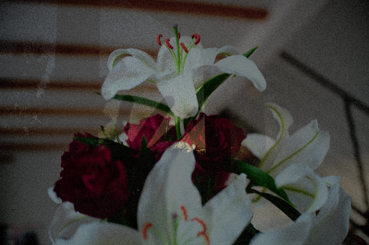
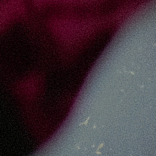
moy 63.7 · σ 34.8
0091840a / a242b9bc
Rouge teinte +60
moy 63.7 · σ 34.7
5ffbf693 / bfa044fd
Vert teinte -60
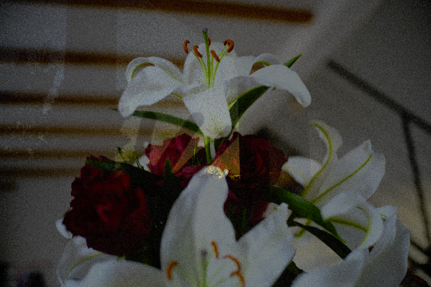
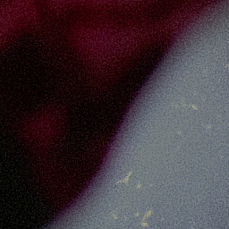
moy 63.5 · σ 35.2
71cf95f0 / 0f88e7c8
Vert teinte +60
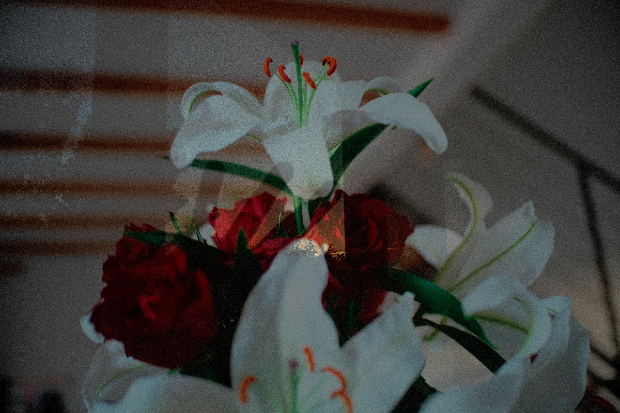
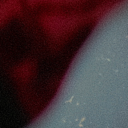
moy 63.7 · σ 34.3
06084fc7 / 50c03503
Bleu teinte -60
moy 63.6 · σ 34.7
649055bf / 1014b625
Bleu teinte +60
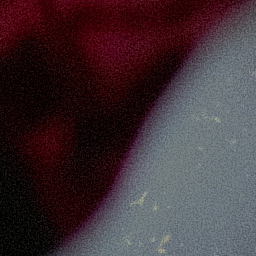
moy 63.6 · σ 35.0
5593ea37 / 7bf31174
Bleu saturation +60
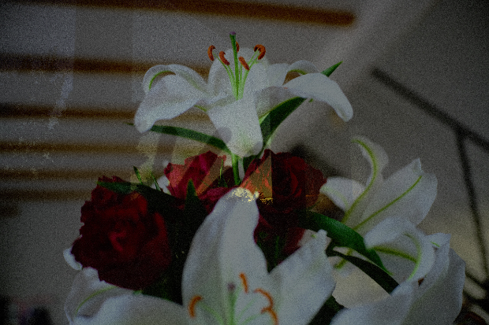
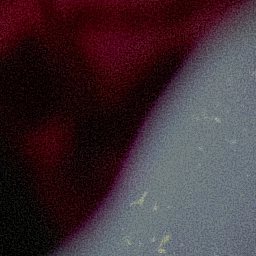
moy 64.1 · σ 34.8
e04c9203 / 10636b18
Nuance foncee -80 (vert)
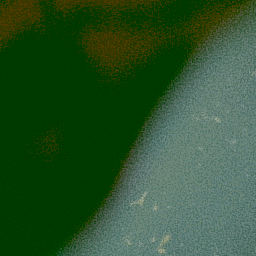
moy 73.6 · σ 27.0
33289fd7 / fea324aa
Nuance foncee +80 (magenta)
moy 54.0 · σ 34.7
46ec034e / 641bd918
Teal & orange (Bleu t-40 s+30, Rouge t+10)
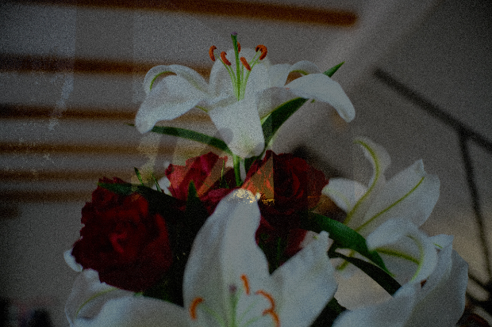
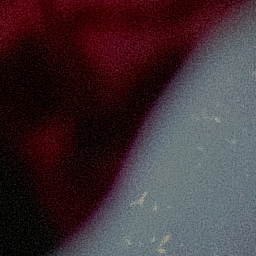
moy 63.7 · σ 34.8
2d3ad943 / cab782d7